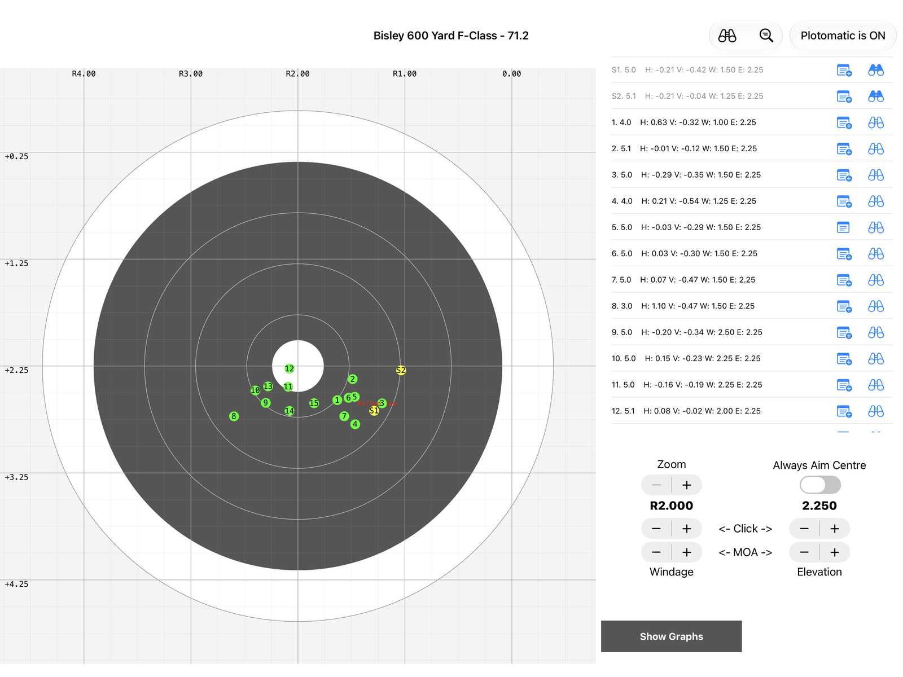
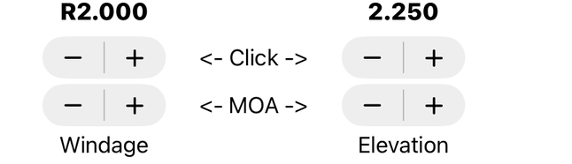
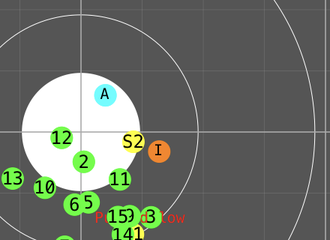
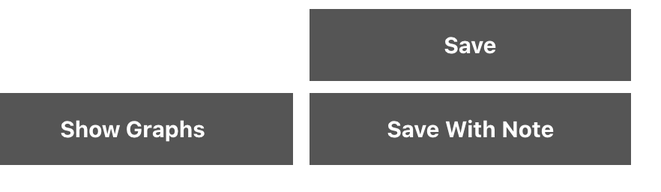
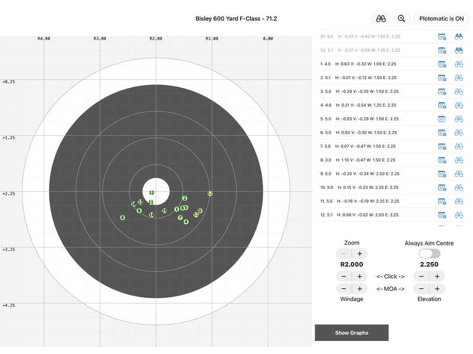

Plotting

The main plotting screen. On iPad the target is on the left and the shot list, scope settings and buttons are on the right.
The title shows the target and your total score so far (as points.V-bulls). The buttons at the top toggle sighters, show the group size, and switch Plot-o-matic on and off.
With Plot-o-matic on, changing the windage or elevation moves the shots you have already plotted, so you see the group as if every shot had been fired with your current settings.
Starting a new session? If you have shot this target before, the app offers to set your elevation to where you finished last time, from the most recent session on the same target. Tap Yes to use it or No to start from zero. NEW

First set your preferred zoom level. When zoomed in you can scroll around the target by dragging with one finger.
Always Aim Centre places your aim point in the centre of the target automatically, so you only need to tap where the shot landed.
Next set the windage and elevation in the app to match your scope.
The top steppers move one turret click (1/4 MOA, 1/8 MOA, 0.1 mil or 0.05 mil, whichever you chose in Settings). The bottom steppers move a whole MOA or mil.

Using a mil scope? Choose 0.1 mil or 0.05 mil clicks in Settings and everything works in mils: the steppers, the target grid, the shot list, the graphs, group sizes and the CSV export. NEW

Now you are ready to plot your first shot.
Your first tap on the target places a pale blue marker (with an "A") where you aimed.
Your second tap places an orange marker (with an "I") where the shot struck.
Tap again to clear both and start a new aim point.

The score for the impact, and how far it is from the centre, is shown above the steppers - handy to check against the target before you save.
Save the shot, or save it with a note if you pulled it or know you made a bad call.

Every shot in the list has two buttons. The note button adds or edits a note on a shot you have already saved, and its icon shows when a shot has one. NEW The binoculars mark a shot as a sighter, so it is numbered S1, S2… and left out of your score.

With Plot-o-matic on, each change you make to the scope settings in the app (which you then make on your scope) moves the plotted shots. You can re-centre the group and see how the wind is moving it and the patterns it forms.
Adam MacDonald's article on plotting explains why this technique works so well: How to improve your score through strategy.

Handy tips:
- Swipe left on a shot to delete it
- Tap a shot in the list to highlight it on the target (tap again to turn it off). With Plot-o-matic off you will also see where you aimed
- To place a line across the target as a bracketing guide, place an aim point and tap Bracket, then choose a windage or elevation bracket
- Brackets are not counted as shots, so your shot numbers stay right NEW
- The magnifying glass button shows the size of your group (excluding sighters) in MOA or mils, and in inches and centimetres